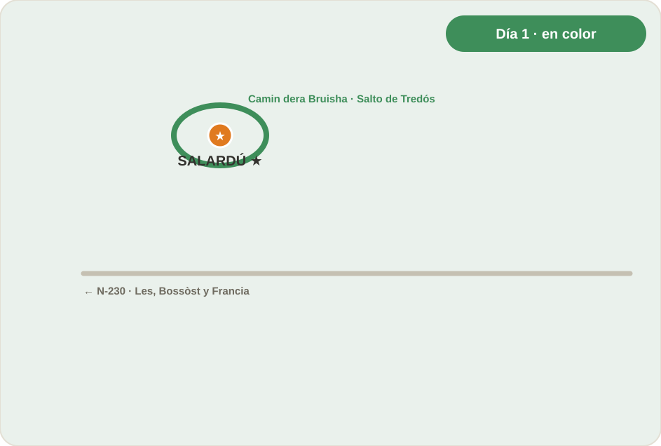
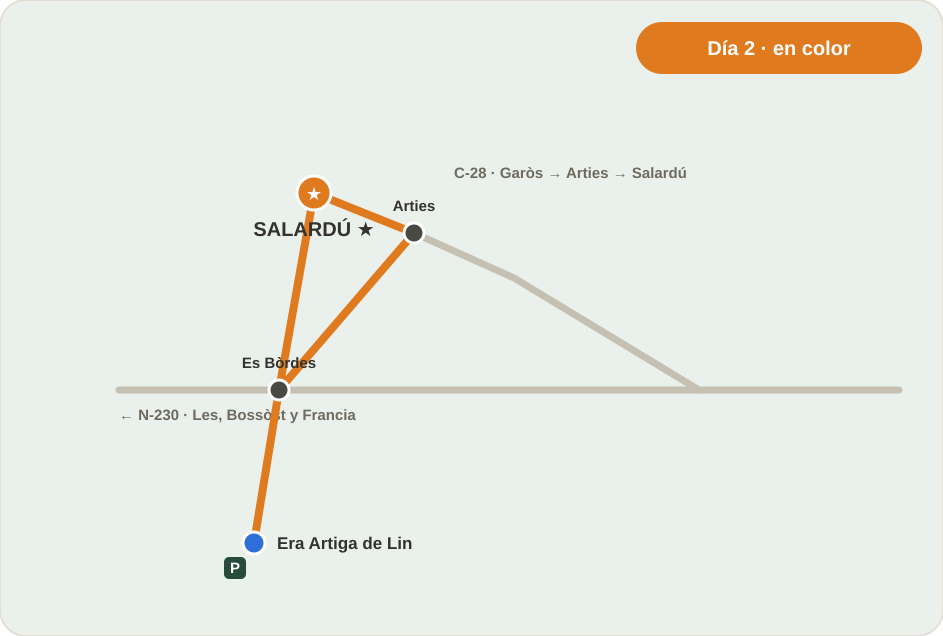
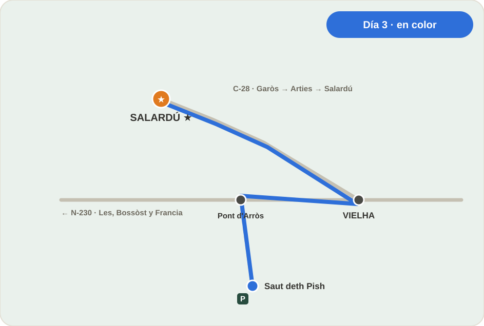
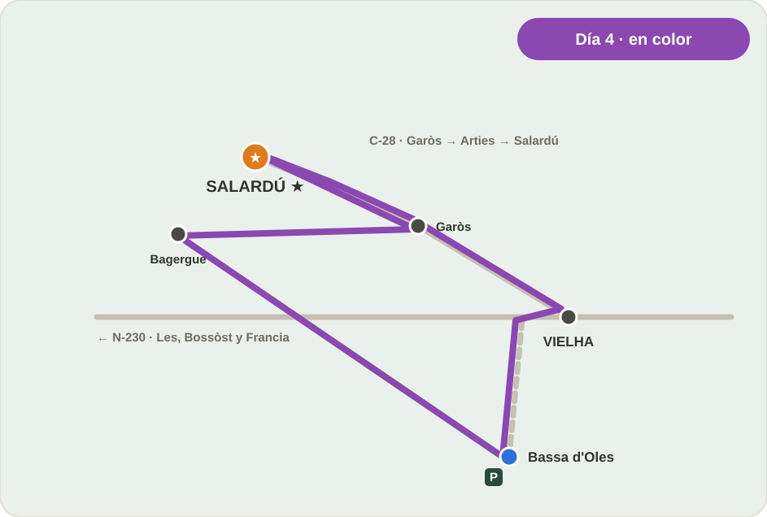
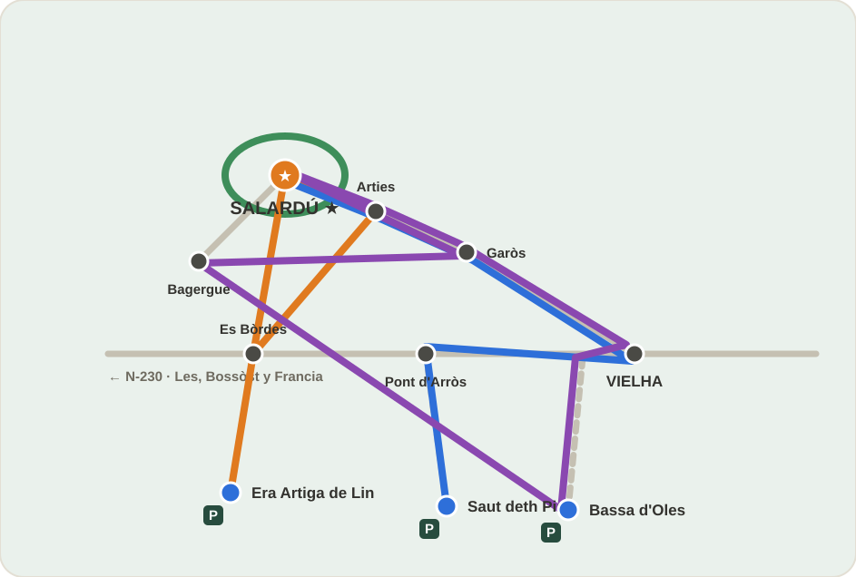

Cómo usar esta guía
Cada día tiene su sección: qué toca, cómo se llega, cuánto se camina y enlaces directos a Google Maps y Wikiloc para seguir las rutas sin buscar nada.
Por la mañana
Abre el día que toca: verás el plan (mañana → ducha → tarde), la ficha práctica y los enlaces directos.
En el coche
Botón «Cómo llegar»: abre Google Maps con el itinerario completo desde Salardú. El mapa del día muestra el recorrido en color.
En la ruta
Usad el enlace de Wikiloc para abrir el track completo, consultar el recorrido, desnivel, fotos y mapa de la ruta.
Cada día tiene su enlace directo, sin búsquedas intermedias.
Llegada y pequeños paseos
Lunes, 5 de octubre


El plan del día
- Al llegarTrayecto desde la costa, check-in en Salardú y descanso en la habitación.
- Tarde · paseoCamin dera Bruisha (en catalán, Cami de les Bruixes) — sendero circular súper llano de casi 2 km por el bosque, a un paso del alojamiento.
- En el mismo paseoSalto de agua de Tredós: primeras fotos del viaje junto al río.
- CenaTerrasseta dera Bruisha (Tredòs) — informal, con terraza. Horario publicado L–D 10:00–21:30 (confirmar). ≈28–35 €/pax.
Ficha práctica
- Salida / parking
- En Salardú, junto al alojamiento (todo a pie)
- Conducción
- 0 min — día sin coche
- Paseo
- ≈ 2 km · llano · ≈ 45 min
- Plan B (lluvia)
- Acortar el bucle y cenar cerca
Llevar: chaqueta ligera y cámara. El sendero es de bosque, sin desnivel.

Cascadas espectaculares
Martes, 6 de octubre


El plan del día
- Mañana · rutaCoche hasta Es Bòrdes y pista del río Joèu al parking de Uelhs deth Joèu.
- Ruta circularEra Artiga de Lin: recorrido circular muy sencillo de 2,5–3 km entre praderas verdes; una ruta muy agradecida.
- En el mismo espacioUelhs deth Joèu, el nacimiento que brota entre las rocas negras.
- Vuelta y duchaAl hotel a relajarse; por la tarde, Arties a pocos minutos: calles de piedra y cena sin prisa.
Ficha práctica
- Salida / parking
- Parking de Uelhs deth Joèu (pista desde Es Bòrdes)
- Conducción
- ≈ 30 min desde Salardú
- Paseo
- circular · 2,5–3 km · sencilla
- Plan B (lluvia)
- Arties con cubiertos o Vielha
El parking es amplio pero se llena: salid tras el desayuno.

Naturaleza relajada y la capital
Miércoles, 7 de octubre


El plan del día
- Mañana · rutaCoche hasta Plan des Artiguetes: 12 km de pista asfaltada desde Pont d'Arròs (estrecha y con curvas).
- Saut deth PishLa cascada emblemática del valle: un salto principal de unos 15–20 m y otro inferior de ~5 m, en 1,2 km ida y vuelta.
- MediodíaRetorno al alojamiento para descansar y ducharse sin agotar las piernas.
- Tarde · VielhaComercios y calles peatonales. Cena en la Sidreria Era Bruisha: tel. 973 64 29 76 · cena mar–dom 20:30–22:45 · lunes CERRADA (el 7 es miércoles ✓) · ≈35–50 €/pax · reserva recomendable.
Ficha práctica
- Salida / parking
- Plan des Artiguetes (12 km de pista desde Pont d'Arròs)
- Conducción
- ≈ 40 min desde Salardú
- Paseo
- ida y vuelta · 1,2 km · 30–45 min
- Plan B (lluvia)
- Directos a Vielha (evitar la pista con lluvia)
La pista es estrecha: si viene un coche en sentido contrario, cede el paso con calma.

Lagos sin esfuerzo
Jueves, 8 de octubre


El plan del día
- Mañana · lagoBassa d'Oles: lago natural rodeado de abetos con sendero circular llano de solo 1,2 km — calma extrema. Acceso: desde Gausac, pista del bosque de Varicauba.
- MediodíaRegreso para la última ducha tranquila de la estancia.
- Tarde · pueblosBagergue — uno de los pueblos más bonitos de España con su florecimiento — y breve parada en Garòs de vuelta.
- Dos planesPlan completo: Bassa + Bagergue + Garòs · Plan relajado: Bassa + solo Bagergue. Elegid según las piernas.
Ficha práctica
- Salida / parking
- Parking junto a la Bassa (desde Gausac, pista de Varicauba)
- Conducción
- ≈ 25 min desde Salardú
- Paseo
- circular · 1,2 km · llano · ≈ 30 min
- Plan B (lluvia)
- Relajado: Bassa + solo Bagergue
La pista puede tener barro en otoño: calzado cerrado y conducción suave.

Mapa general del valle
Esquema orientativo, no a escala. Cada color es un día; Salardú ★ es vuestra base.

Aparcamientos y accesos
| Lugar | Dónde dejar el coche | Nota | Maps |
|---|---|---|---|
| Camin dera Bruisha | Aparcamiento del alojamiento o de Salardú | Se hace todo a pie desde la base | Abrir ↗ |
| Era Artiga de Lin | Parking de Uelhs deth Joèu, al final de la pista de Es Bòrdes | Amplio pero se llena; en octubre, acceso libre (sin restricciones de verano) | Abrir ↗ |
| Saut deth Pish | Plan des Artiguetes | 12 km de pista estrecha y con curvas desde Pont d'Arròs | Abrir ↗ |
| Bassa d'Oles | Parking junto a la Bassa (desde Gausac) | Pista del bosque de Varicauba; posible barro | Abrir ↗ |
| Vielha | Parking público del centro | Mejor dejarlo y caminar por el casco | Abrir ↗ |
| Bagergue | Aparcamiento de la entrada al pueblo | No meter el coche por las calles estrechas | Abrir ↗ |
Cenas sin gastar demasiado
- Terrasseta dera Bruisha (Carrer Major 12, Tredòs): informal, con terraza. Ideal el día de llegada.
- Horario publicado: L–D 10:00–21:30 (confirmar). Precio aprox.: 28–35 €/pax.
- Rápido en el pueblo: bocadillos, pizza o platos combinados, sin coger el coche.
- Pueblo para pasear y cenar con tranquilidad tras la ruta.
- Qué buscar: cartas cortas, raciones o platos combinados.
- Zona agradable — no necesariamente la más barata, pero con mucho encanto.
- Mayor variedad: pizza, hamburguesa, bocadillos o menú del día.
- Sidreria Era Bruisha (C/ Marrèc 18) — no es la opción económica: cena mar–dom 20:30–22:45, comida sáb–dom, lunes cerrada, ≈35–50 €/pax, reserva recomendable.
- Tel.: 973 64 29 76 · Ficha oficial
Para ahorrar
- Desayuno y snacks en el alojamiento; cena fría comprada en Vielha.
- Agua, fruta y frutos secos para las rutas.
- Revisad si hay menú o platos combinados antes de sentaros.
Antes de sentarse
- Precio aprox. por persona · ¿acepta reserva?
- Horario de HOY (¡ojo con los lunes!) · ¿terraza o aparcamiento?
- En temporada baja los horarios cambian: confirmad el día anterior.
Plan B: lluvia o piernas cansadas
- Vielha bajo techo: Museu Etnològic de la Vall d'Aran, tiendas y tapas por el casco.
- Compras útiles: supermercado en Vielha para la cena y el camino del día siguiente.
- Evitar la pista del Pish con lluvia: es estrecha y con curvas.
- Acortar Artiga: desde el parking, los Uelhs deth Joèu están a unos 500 m llanos.
- Día 4 relajado: Bassa d'Oles + solo Bagergue; Garòs queda para otra visita.
- Descanso total: paseo corto por Salardú, Terrasseta y a la habitación.
- Sin culpa: las rutas están para sumar recuerdos, no kilómetros.
Datos interesantes del valle
Capital del Naut Arán
Salardú es la capital del Alto Arán: unos 600 habitantes cruzados por el Camin Reiau, un antiguo camino trashumante.
Aquí se habla aranés
El aranés (variante del occitano) es lengua cooficial: deth/dera = del/de la, bruixa = bruja… Los topónimos cuentan la historia.
La Garona llega al Atlántico
Nace en el valle araneso y atraviesa Francia hasta Burdeos: pocos grandes ríos empiezan en España y desembocan en el Atlántico.
Bagergue, flores y altura
Uno de los pueblos habitados más altos del valle; Viles Florides y de los Pueblos Más Bonitos de España — ¡hasta National Geographic lo elogió!
Arties, entre dos aguas
Su nombre evoca la confluencia de Garona y Valarties: Parador Nacional, iglesias góticas y calles con mucho encanto.
Uelhs deth Joèu = ojos
Dos cascadas que esculpen un «ojo» en la roca negra del barranco; para muchos, el rincón más bonito del valle.
Check-out… ¿y después?
Tres caminos posibles desde el día 9 hasta el 15 — decididlo allí, sin prisas.
Hacia casa por Francia
Vielha → Port del Portilhòn → Luchon → Montrejeau (A64). Comprobad el estado del puerto en octubre.
Abrir ruta en Google Maps ↗Pirineo aragonés
Bajada por el port de la Bonaigua hacia el Pallars (Sort) y enlazar con Aragón, según el tiempo.
Abrir ruta en Google Maps ↗Dos noches más
Si el valle os enamora: Banhs de Tredós, Baqueira o simplemente repetir vuestro paseo favorito.